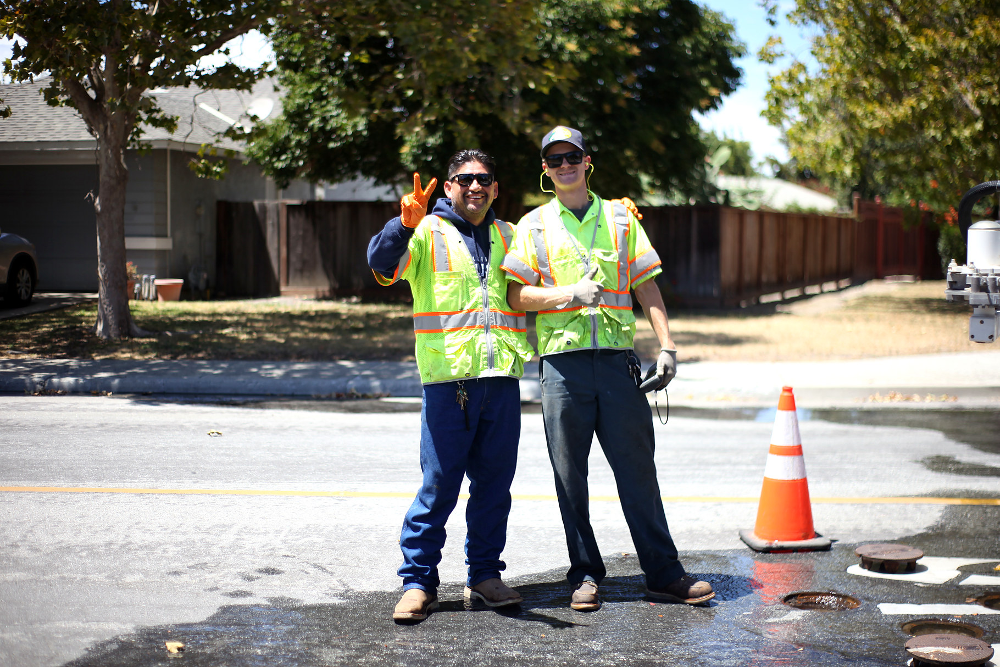
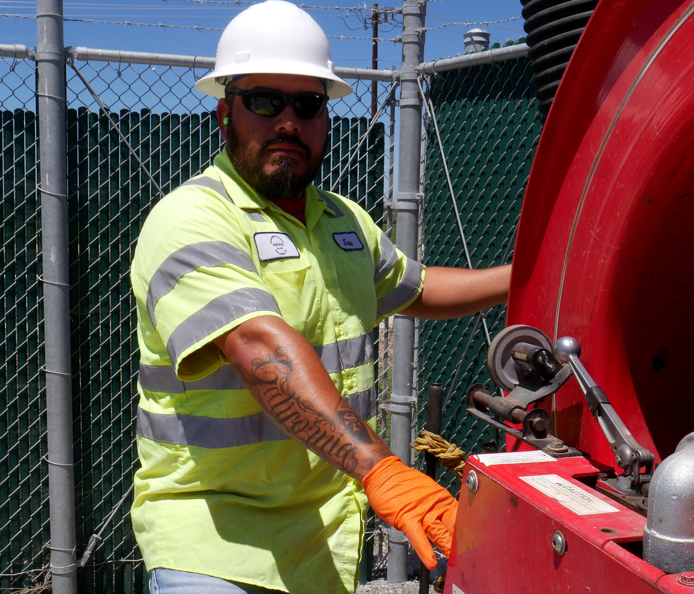
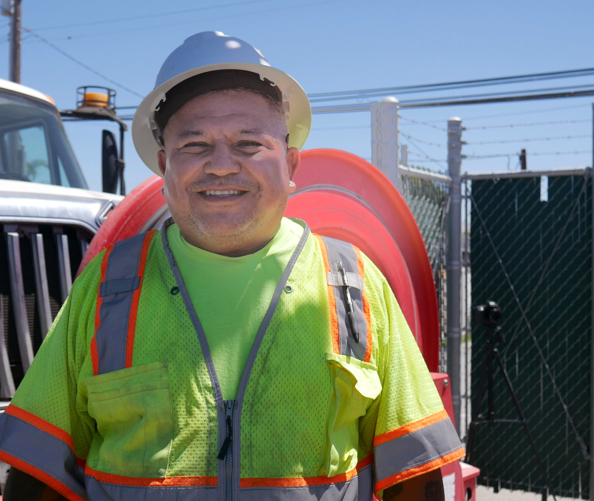

WE ARE HOLLISTER
Protect Hollister
Public Services

CITY OF HOLLISTER EMPLOYEES
are the backbone of our community.
City services and good union jobs that stabalize the local economy are at risk. After years of poor budget decisions, city leaders are now proposing major changes without first sitting down with the workers who provide these services or the residents who depend on them.

Sometimes, a row of cones and a reflective vest are all that separate the crew from drivers who do not slow down. Safe street work depends on experience and teamwork. One person operates the machine while another keeps an eye on approaching traffic. Felix, Jason, and Andres are guiding material hot enough to cause serious burns while vehicles quickly continue moving around the crew well above the speed limit.
Hollister’s public service crews are already working with barely enough people to cover the work. Workers and residents are concerned that City Manager Ana Cortez’s restructuring plan will leave fewer people available to respond, make residents wait longer and put smaller crews in more dangerous situations. That means slower public services, more public emergencies and less protections for both workers and residents.

Public work does not shrink because a budget does. In fact, its the opposite. More work, with less workers = a dangeous mix for public safety and public services. Residents still expect someone to answer when something breaks at six in the morning.
When fewer workers are expected to cover the same amount of work, something gets left undone. Routine maintenance gets postponed because the crew has to respond to the latest emergency. Small problems that could have been fixed today become expensive emergencies tomorrow. Workers worry that another round of cuts will leave them without enough backup and make it harder to give residents the service they pay for and deserve.
Experience is what keeps this work safe. Workers learn to read traffic before stepping into it, feel when a machine is running too hot and recognize when a routine repair is becoming a serious failure. That judgment takes years to build. Once it walks out the door, the city cannot replace it overnight.
Tap any photo to see it larger

Water work is precise, physical and unforgiving. Valves underground. Hydrants that must flush clean. Lines that fail without warning. The crews who do this work know which neighborhoods go first when pressure drops and which covers hide the valves that actually matter.
Hand that system to a private company and you trade neighbors who answer to the public for a contractor that answers to a profit line. Residents pay either way. The question is whether the people responsible for Hollister’s water are committed to this community for the long term or simply completing the work required by a contract.
Tap any photo to see it larger

Storm and sanitation crews clear the lines that keep water from backing up into streets, yards and homes. The pipes and storm systems are OLD, almost 100 YEARS OLD. Knowing which line clogs up first after a hard rain is not written in a manual that arrives with a contractor or by pushing brand new workers out into the field to only spend more money on overtime to figure out the problem.

Hydrants must flush clean, but lines fail without warning. SEIU Local 521 members like Arthur Hernandez and Jose Munoz, long-term locals, know where and how to fix the problem immediately when a flood hits.
When you hand this aging system over to a private contractor as Ana Cortez and the City Council are planning, you trade tax paying, local neighbors who answer to the public for a contractor that answers to a profit line.
Residents don't deserve to suffer for the City Council to make a profit on their public services. The question truly is if the people providing the public services work are invested in Hollister, or in their next invoice.
Tap any photo to see it larger
Tap any photo to see it larger
Tania Gonzalez's work is engineering prep, and it is extremely detailed. Specs, schedules, records and the quiet checks that stop a bad plan from becoming a bad job in the street. People who know this system can tell when those details are right. That is how public trust is built.
So why settle for a private company motivated by profit, not public services? Engineering that serves Hollister has to answer to residents, not a margin. Hollow out that desk work and the field pays for it.
Hollister is not maintained by spreadsheets or organizational charts. It is maintained by people who know where the water pools first in a storm, which stretch of pipe has been failing for years, and how to finish a job without shutting down half a street. None of that is written down anywhere. It leaves when they leave.
Residents understand that cities face hard budget decisions. The question workers and neighbors keep asking is what gets lost when work built around public responsibility is handed to an outside contractor. A contractor arrives without any of this history and answers to a profit margin. The city has already raised the possibility of subcontracting Animal Services and outsourcing our water department.
Public employees are accountable to the community they serve. They live here. They see residents at the grocery store and at their kids' schools. They are invested in Hollister for the long term, and that changes how carefully the work gets done.
Knowledge like this is built over decades and lost in a single budget cycle.
Residents deserve transparency when decisions are made about the reliability of the services they pay for. Workers and community members are asking City leadership to answer plainly:
City of Hollister employees are the backbone of our community. SEIU 521 members are neighbors. They are the people residents see repairing streets, maintaining water systems, clearing drains after a storm and keeping public spaces safe. Their experience is one of the most valuable things this city owns, and it does not appear anywhere on a balance sheet.
City employees helped balance this budget in 2025 and they are willing to do it again. They should not have to do it from a crew too small to keep itself safe. What they are asking for is a real seat at the table before decisions get made about the services this community depends on every day.
Hollister is deciding more than a budget. It is deciding what kind of city it becomes, and who will be left to keep it running.